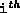
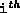

Data Structures and Algorithms
with Object-Oriented Design Patterns in Java
Data Structures and Algorithms
with Object-Oriented Design Patterns in Java
Program  defines the three methods
for manipulating the subtrees of an N-ary tree.
The getSubtree method takes as its argument
an int, i, which must be between 0 and N-1.
It returns the  subtree of the given tree.
Note that this operation is only defined for a non-empty N-ary tree.
Given that the tree is not empty,
the running time is O(1).
defines the three methods
for manipulating the subtrees of an N-ary tree.
The getSubtree method takes as its argument
an int, i, which must be between 0 and N-1.
It returns the  subtree of the given tree.
Note that this operation is only defined for a non-empty N-ary tree.
Given that the tree is not empty,
the running time is O(1).
The attachSubtree method takes two arguments.
The first is an integer i between 0 and N-1.
The second is an NaryTree instance.
The purpose of this method is to make the N-ary tree specified
by the second argument become the  subtree of the given tree.
It is only possible to attach a subtree to a non-empty node and
it is only possible to attach a subtree
in a place occupied by an empty subtree.
If none of the exceptions are thrown,
the running time of this method is simply O(1).
subtree of the given tree.
It is only possible to attach a subtree to a non-empty node and
it is only possible to attach a subtree
in a place occupied by an empty subtree.
If none of the exceptions are thrown,
the running time of this method is simply O(1).
The detachSubtree method takes a single argument i which is an integer between 0 and N-1. This method removes the subtree from a given N-ary tree and returns that subtree. Of course, it is only possible to remove a subtree from a non-empty tree. Since every non-empty node must have N subtrees, when a subtree is removed it is replaced by an empty tree. Clearly, the running time is O(1) if we assume that no exceptions are thrown.
 Copyright © 1998 by Bruno R. Preiss, P.Eng. All rights reserved.
Copyright © 1998 by Bruno R. Preiss, P.Eng. All rights reserved.